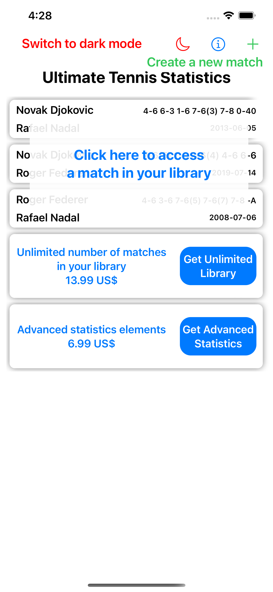
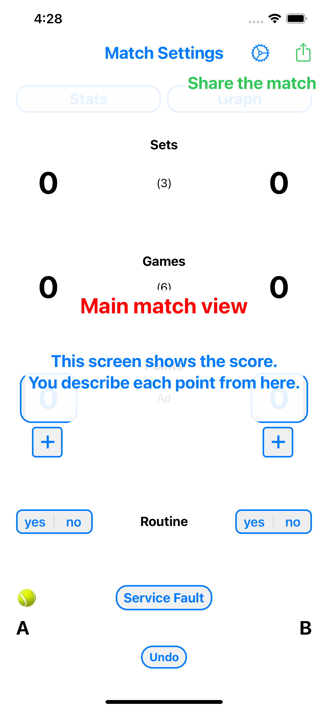
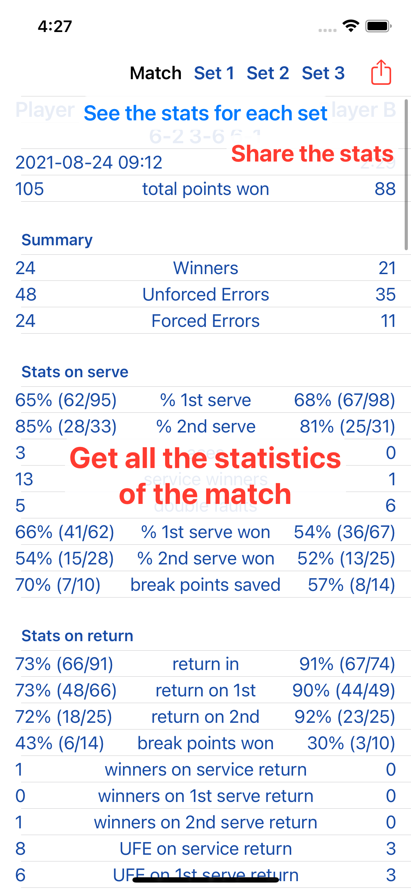
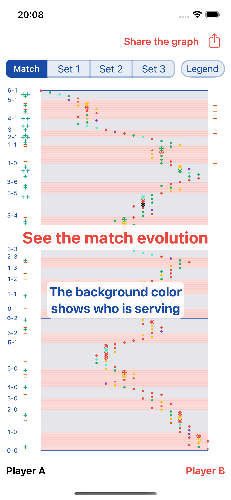
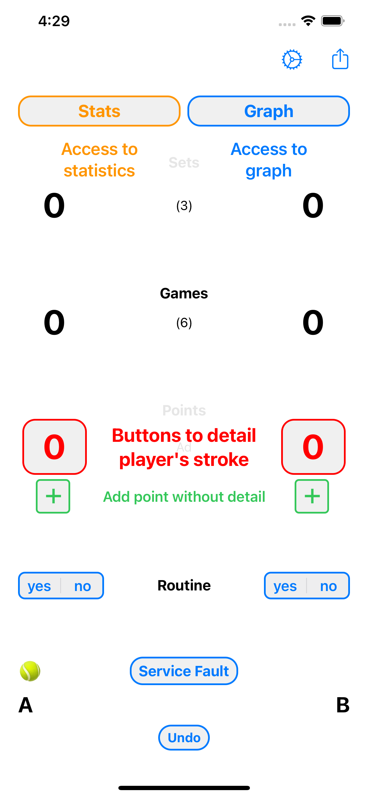
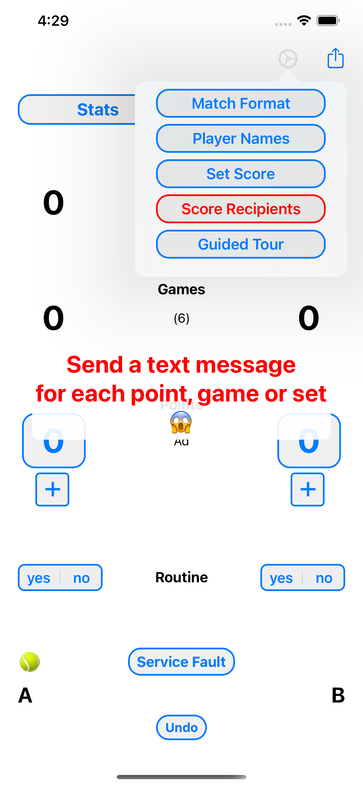

The Ultimate Tennis Experience
The most complete app to collect statistics for tennis matches. Join players who use data to dominate the court.
The only app which texts the score live!
In this era of data, if you want to improve your tennis skills, you need data. Note every point, analyze every stroke, and share progress in real-time.
Powerful Features
Live Tracking
- Easily enter how each point ended
- Ace, winner, unforced & forced errors
- Note attitude and routine
- Write custom notes per point
Real-time Updates
- Score computed automatically
- Share score via text as you play
- Updates at points, games, or sets
- Jump to any score if you miss a part
Deep Analysis
- Match trends and interactive graphs
- Set-by-set detailed breakdowns
- Pressure point stats (30-30, 40-40)
- Export as Image or CSV for sharing
App Showcase






Go Pro
Unlock unlimited match storage and precise stroke qualification including depth, placement (inside-in/out, crosscourt), and point sequence analysis.
- Unlimited Match Library
- Placement Analysis
- 2nd Stroke Tracking
- Advanced Error Detail